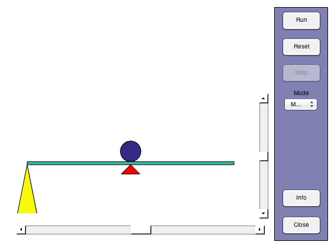
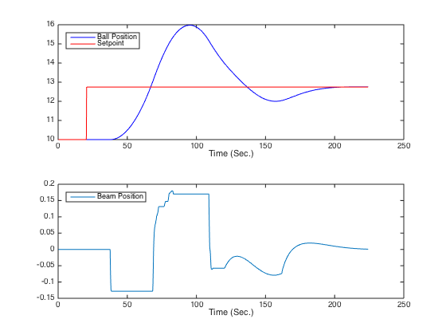
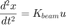
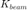
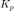
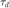
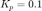

Ball & Beam Demo
The ball & beam demo was created as a lecture and homework demonstration of basic modes of proportional and proportional-derivative control. It was originally written in 2001, and most recently tested in 2011 using a current version of Matlab. These notes describe basic concepts incorporated in the demo and possible homework exercises.
Contents
Operation
The ballbeam.m file is a function that can be run with no arguments. To start the demo simply enter ballbeam at the Matlab command prompt.
ballbeam
Warning: The EraseMode property is no longer supported and will error in a future release. Use the ANIMATEDLINE function for animating lines and points instead of EraseMode 'none'. Removing instances of EraseMode set to 'normal', 'xor', and 'background' has minimal impact. Warning: The EraseMode property is no longer supported and will error in a future release. Use the ANIMATEDLINE function for animating lines and points instead of EraseMode 'none'. Removing instances of EraseMode set to 'normal', 'xor', and 'background' has minimal impact.
User Interaction
The demo starts up in manual mode. The vertical slider moves the end of the beam up and down. The bottom slider adjusts the setpoint indicated by the red marker. Push the Run button to start the simulation. The ball will roll back and forth on the beam as you move the beam position up and down. The simulation is stopped by pushing the Stop button or when the ball rolls off either end of the beam. A summary of the simulation results is shown in the plot.
Exercise: Move the setpoint to a new place, press Run, and manipulate the beam position to settle the ball over the new setpoint.
Plotting Simulation Data
Simulation data is stored in a file ballbeam.mat after each run. The data can be loaded and plotted as follows:
load ballbeam clf subplot(211); plot(tdata,xdata,'b',tdata,xspdata,'r'); legend('Ball Position','Setpoint','Location','NW'); xlabel('Time (Sec.)'); subplot(212); plot(tdata,udata); legend('Beam Position','Location','NW'); xlabel('Time (Sec.)');
Dynamics
The position of the ball is governed by a second order differential equation of the form

Exercise: Design and perform a simulation experiment to estimate the parameter .
Proportional Control
As the name suggests, under proportional control the beam position is set in proportion to the difference between the ball position and desired setpoint.

Under the Mode menu, select proportional control (P) and use the slider controls to adjust . Adjust the setpoint, then push Run. You can adjust the setpoint and control gain during the course of a Run.
Exercise: What type of behavior do you observe? Substituting the the expression for the control action into the dynamical model leads to a second order differential equation. What is the solution to that equation?
Exercise: Use the results of the above exercise to estimate the value of .
Proportional-Derivative Control
Proportional control alone leads to an oscillatory response. Proportional-Derivative (PD) control adds additional damping through a derivative term in the control law

where  is the derivative 'time-constant'. Under the Mode menu, select proportional-derivative control (PD) and adjust the parameters with the associated sliders.
Exercise: Set . How large does need to be to completely suppress overshoot of the setpoint?
Exercise: Explore the response of the controlled system to a step change in the setpoint. Would you prefer an underdamped, critcally damped, or overdamped control system? Explain.